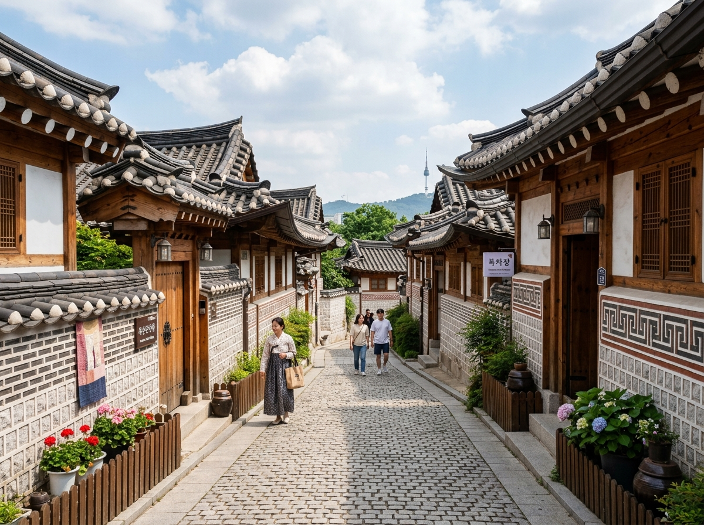
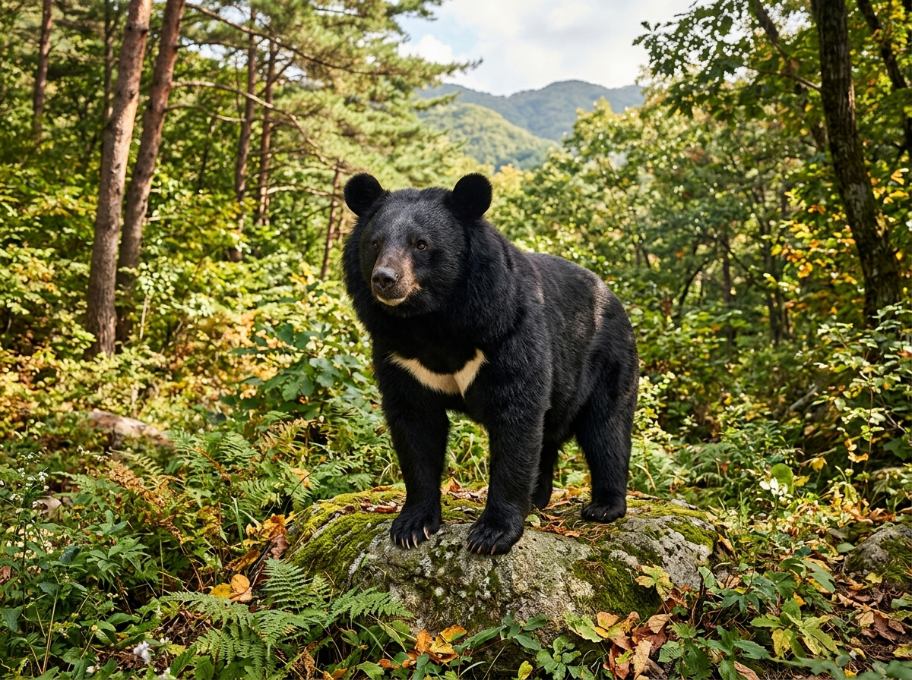
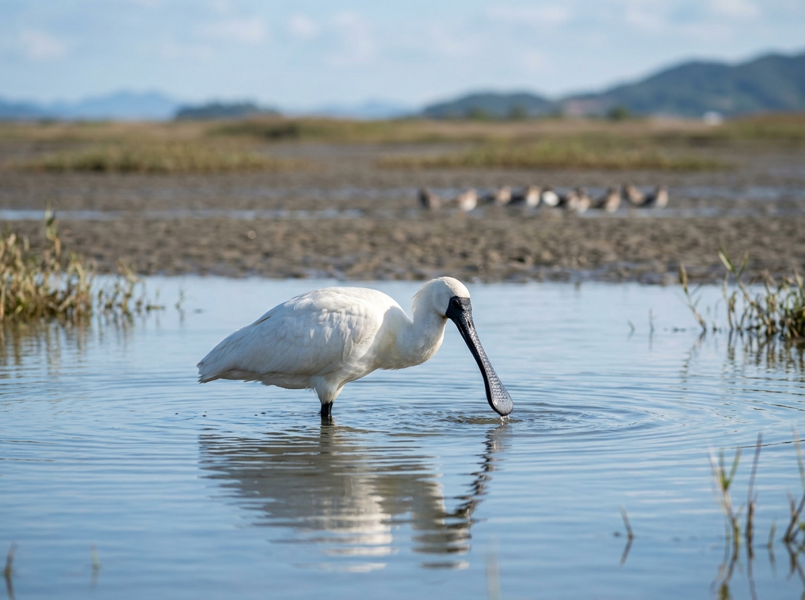
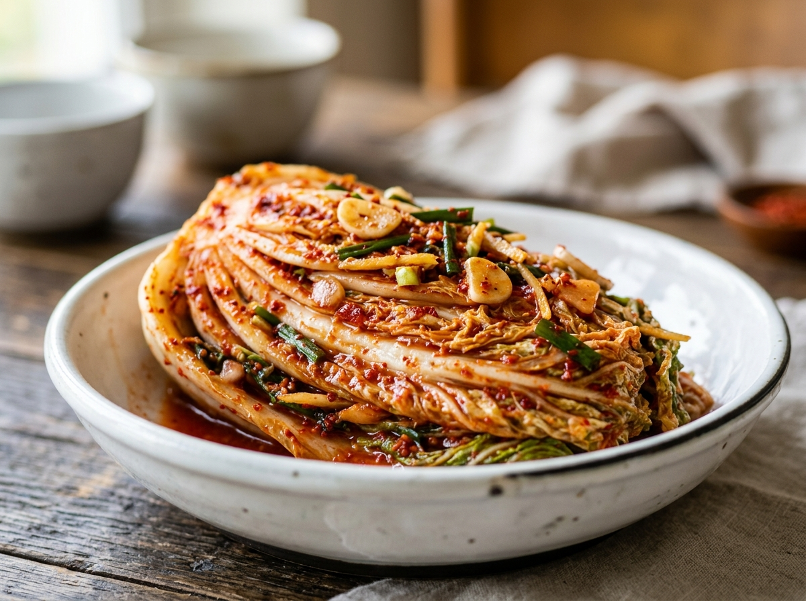
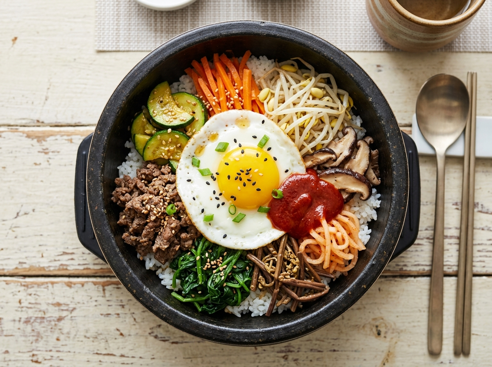
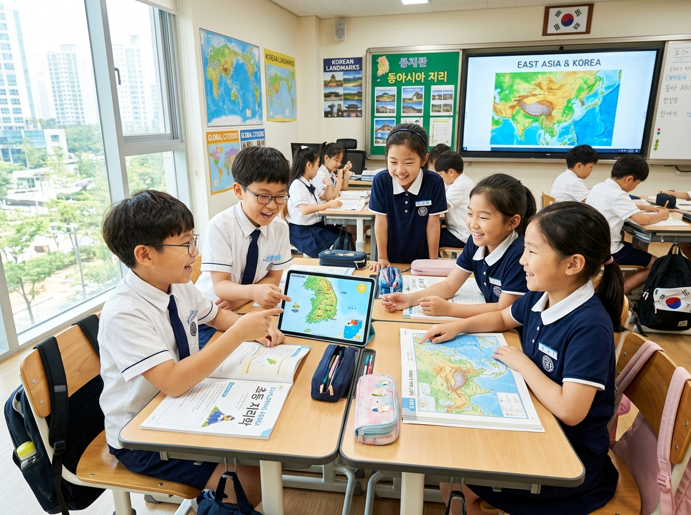

Hier stehen die wichtigsten Daten zu deinem Land. In der App baust du daraus deinen eigenen Steckbrief.
| Hauptstadt | Seoul |
| Kontinent | Asien |
| Sprache | Koreanisch |
| Währung | Won |
| Einwohner | etwa 51 Millionen Menschen |
| Fläche | etwa 100.000 km², also ungefähr ein Viertel so groß wie Deutschland |
| Höchster Berg | der Hallasan auf der Insel Jeju, fast 2.000 Meter hoch |
| Nachbarländer | im Norden grenzt Südkorea an Nordkorea. Über das Meer liegen Japan und China. |
In Südkorea gibt es viele berühmte Orte. Diese vier solltest du kennen.
Gyeongbokgung-PalastDer Gyeongbokgung-Palast steht mitten in der Hauptstadt Seoul. Es ist ein großer, alter Königspalast mit vielen Gebäuden und Toren. Früher wohnten hier die Könige von Korea. Heute kann man den Palast besuchen und sich dort sogar in alte Kleider verkleiden.
Grüne Wörter für die AppKönigspalastin Seoulgroße ToreKönigezum Verkleiden
N Seoul TowerDer N Seoul Tower ist ein hoher Turm auf einem Berg in Seoul. Von ganz oben hat man einen tollen Blick über die riesige Stadt. Am Geländer hängen viele bunte Liebesschlösser. Bei Nacht leuchtet der Turm in vielen Farben.
Grüne Wörter für die Apphoher Turmauf dem BergBlick über die StadtLiebesschlösserleuchtet bunt
Insel JejuDie Insel Jeju liegt im Meer vor der Südküste. Sie ist aus einem Vulkan entstanden, darum gibt es dort schwarze Felsen und Wasserfälle. Auf der Insel steht auch der höchste Berg des Landes. Viele Familien machen hier Urlaub.
Grüne Wörter für die AppInselim MeerVulkanschwarze FelsenWasserfälle
Bukchon Hanok VillageBukchon Hanok Village ist ein altes Stadtviertel in Seoul. Hier stehen viele traditionelle koreanische Häuser, die man Hanok nennt. Die Dächer sind geschwungen und aus Ziegeln. Zwischen den hohen Hochhäusern wirkt das Viertel wie aus alter Zeit.
Grüne Wörter für die Appaltes Viertelin SeoulHanok-Häusergeschwungene Dächertraditionell

In den Wäldern und an den Küsten Südkoreas leben besondere Tiere.
Sibirischer TigerDer Tiger ist das wichtigste Wappentier von Südkorea. Er kommt in vielen alten Märchen und Geschichten vor. In der Natur lebt er auf der koreanischen Halbinsel heute fast nicht mehr. Trotzdem ist er für die Menschen ein Zeichen für Mut und Stärke.
Grüne Wörter für die AppWappentierin Märchenstarkselten gewordenSymbol für Mut
Asiatischer SchwarzbärDer Asiatische Schwarzbär lebt in den Bergwäldern von Südkorea. Sein Fell ist schwarz und auf der Brust hat er einen hellen Fleck, der wie ein Mond aussieht. Darum nennt man ihn auch Mondbär. Heute gibt es nur noch wenige von ihnen.
Grüne Wörter für die AppBärschwarzes FellBergwaldheller FleckMondbär


Schwarzgesicht-LöfflerDer Schwarzgesicht-Löffler ist ein seltener weißer Wasservogel. Sein Schnabel ist vorne breit und sieht aus wie ein Löffel. Damit fängt er im flachen Wasser kleine Tiere. An der Küste von Südkorea baut er seine Nester.
Grüne Wörter für die AppWasservogelweißSchnabel wie Löffelan der Küsteselten
In der App kannst du beim Essen das Foto nehmen oder dein Gericht selbst malen.
KimchiKimchi ist das bekannteste Essen aus Korea. Es ist Gemüse, das scharf gewürzt und eingelegt wird, meistens Chinakohl. Kimchi schmeckt scharf und ein bisschen sauer. Fast zu jedem Essen steht eine kleine Schüssel davon auf dem Tisch.
Grüne Wörter für die Appeingelegtes GemüseChinakohlscharfzu jeder Mahlzeitbekanntestes Gericht

BibimbapBibimbap ist ein bunter Reistopf. In der Schüssel liegen Reis, Gemüse, ein Ei und oft auch Fleisch. Dazu kommt eine würzige rote Soße. Vor dem Essen mischt man alles gut durch.
Grüne Wörter für die AppReistopfGemüseEirote Soßegut durchmischen

TteokbokkiTteokbokki sind weiche Reiskuchen in einer Soße. Die Soße ist süß und scharf zugleich. Die Reiskuchen sind zäh wie Kaugummi. Man kauft sie gern als Snack an einem Stand auf der Straße.
Grüne Wörter für die AppReiskuchenweich und zähsüß-scharfe SoßeSnackvon der Straße
⚽ Gut zu wissen
Die Fußball-Nationalmannschaft von Südkorea heißt die Taegeuk-Krieger. Sie spielt im roten Trikot. Bei der WM 2026 in den USA, Mexiko und Kanada ist Südkorea wieder dabei. Die Mannschaft ist die beste in ganz Asien und ist bekannt für schnelles und ausdauerndes Spielen.
Grüne Wörter für die AppTaegeuk-Kriegerrotes TrikotWM 2026Son Heung-minvierte WM
🌟 Profi-Wissen
Son Heung-min ist Südkoreas größter Fußballstar. Er spielt beim englischen Verein Tottenham Hotspur und ist für seine Schnelligkeit bekannt. In Südkorea liebt ihn fast jeder. Bei der WM 2002 schaffte Südkorea das Halbfinale, das war ein historischer Erfolg für Asien.
Grüne Wörter für die AppSon Heung-minTottenham Hotspursehr schnellWM 2002 HalbfinaleAsien-Sensation
Schule in SüdkoreaIn Südkorea lernen die Kinder sehr viel. Die Schule beginnt am Morgen und dauert oft bis zum Nachmittag. Viele Kinder gehen danach noch in eine extra Lernschule, die Hagwon heißt. Dort üben sie zum Beispiel Englisch, Mathe oder Musik. So ist der Tag für viele Kinder ganz schön lang.
Grüne Wörter für die Appviel lernenlanger SchultagHagwonLernschule am NachmittagEnglisch und Mathe
K-Pop und ComputerspieleIn Südkorea sind viele Kinder ganz verrückt nach K-Pop. Das ist koreanische Popmusik mit bunten Tänzen und großen Bands. Die Lieder kennen Kinder auf der ganzen Welt. Auch Computerspiele sind sehr beliebt. In Südkorea schauen viele Menschen sogar im Stadion zu, wenn Profis gegeneinander spielen.
Grüne Wörter für die AppK-PopTanzgroße BandsComputerspieleProfis im Stadion
